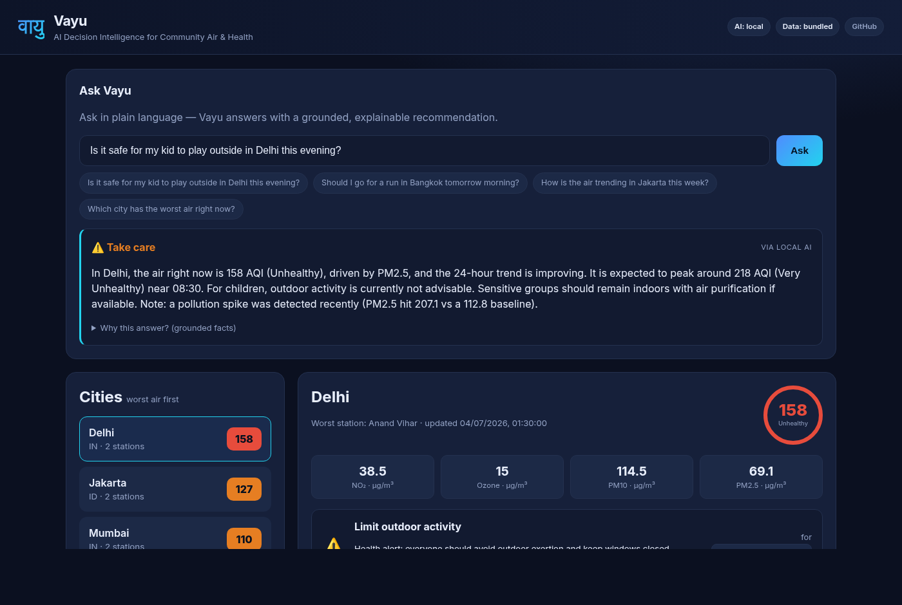
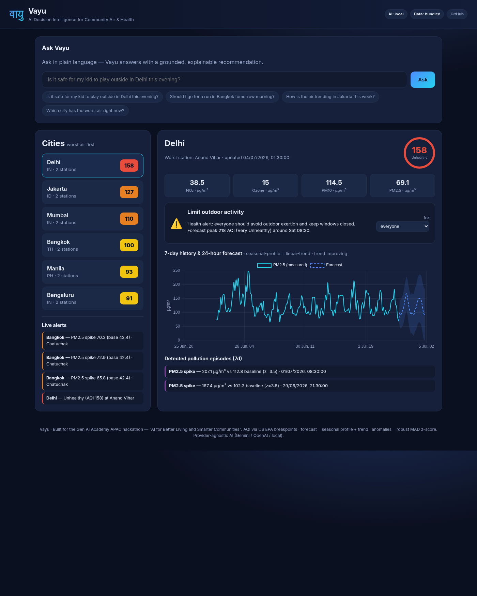

Air pollution is the top environmental health risk in APAC. Vayu converts open sensor data into personal, population-aware health decisions for citizens and a situational-awareness + alert layer for city stakeholders.
A Gemini-powered assistant reasons over an analytics engine (AQI, forecast, anomalies); designed for Vertex AI, a BigQuery time-series lake, and one-command Cloud Run deploy. Grounded so it never invents numbers.
Ingest → compute EPA AQI → forecast 24h → detect episodes → synthesize a recommendation → narrate in natural language. A task that took an analyst minutes collapses to one sentence in <1s.
Plain-English question → grounded answer + one clear recommendation, with best-time-window guidance.
PM2.5, PM10, NO₂, O₃ sub-indices with dominant-pollutant attribution — real domain logic.
Seasonal hour-of-day profile × recent trend, with a widening confidence band.
Robust rolling median + MAD z-score flags real spikes vs. baseline.
Tailored guidance for children, elderly, asthma, pregnancy, and outdoor exercise.
Unhealthy-air + episode alerts — the push layer for schools & city stakeholders.
Parents, runners, commuters, elderly & asthma patients get an instant, personalized go / no-go call.
Auto-alerts drive decisions: move practice indoors, shift shifts, issue advisories.
Cross-city episode feed + trends support faster interventions and public communication.

Ask Vayu — natural-language answer with a verdict, AI-provenance badge, and an expandable "Why this answer?" panel.

Live dashboard — worst-air-first city list, AQI gauge, pollutant cards, population decision, 7-day history + 24h forecast, detected episodes, alert feed.